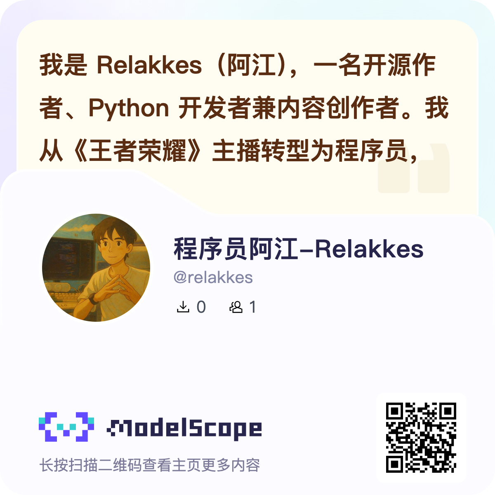
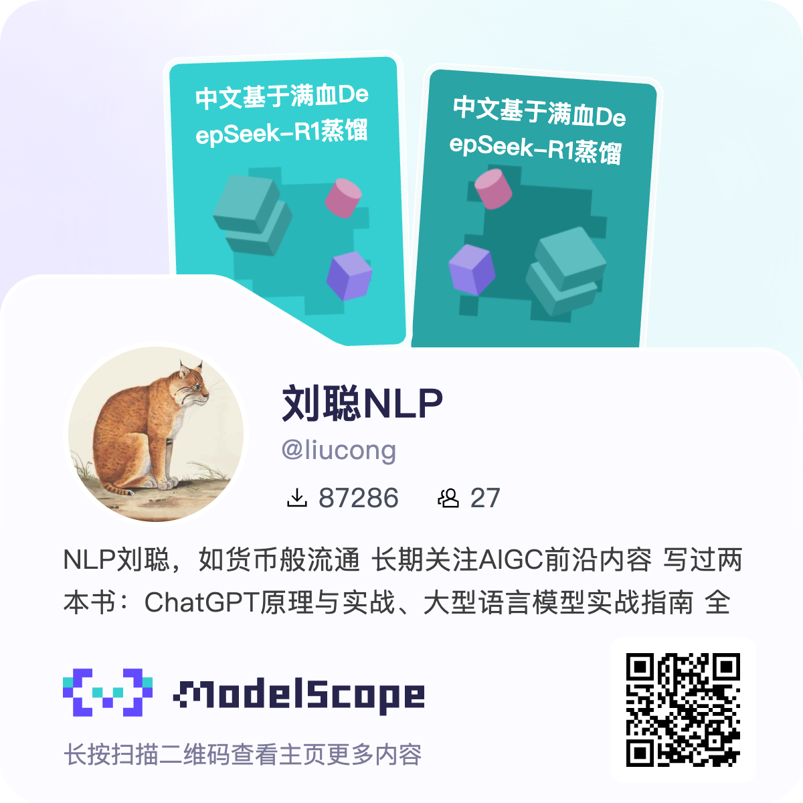
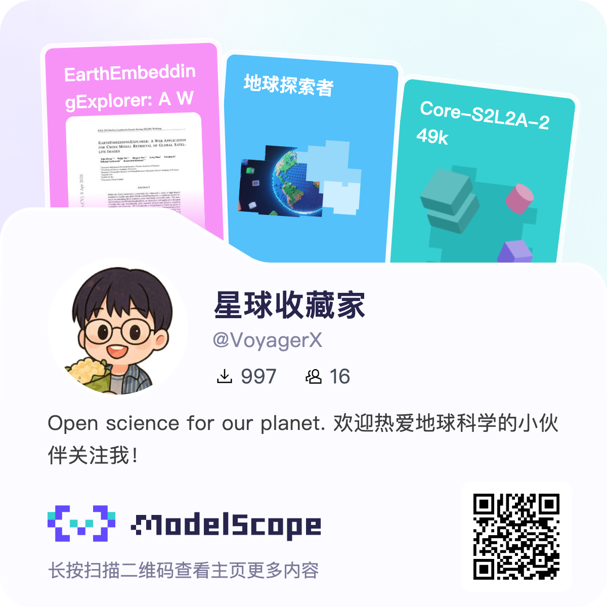

0%
10 人社区共建 COMMUNITY
7 个真实任务 REAL TASKS
40 万字合计字数 WORDS
找到你的阅读起点
从基础概念到真实场景，循序渐进，动手实践。
一起把实践经验写进紫皮书
交流模型使用经验，分享可复现的案例，参与内容共建。
从基础概念到真实场景，循序渐进，动手实践。
交流模型使用经验，分享可复现的案例，参与内容共建。
可以试试“微调”“RAG”或“语音”，也可以直接浏览全书。
征集图像与品牌 LoRA、图像编辑、视频一致性与工作流、音频与音乐生成、AIGC 效果评测等可复现经验。以下方向仍在共建中，完整教程以全书目录的可读状态为准。
第 24 章 · 视频教程待更新 ↗查看投稿方式 ↗第 24 章的视频教程仍在准备中，欢迎分享视频生成与工作流实践。
查看章节状态 ↗参与场景共建 ↗COMMUNITY
交流开源模型实践，讨论阅读中遇到的问题，寻找一起共建的伙伴。
请使用微信扫码，手机上可长按保存识别。
修正问题、补充案例或完善网站，都可以从 Issue 和 Pull Request 开始。
分享你已经跑通的模型应用、AIGC 创作流程与真实效果。
每一份分享、每一次改进，都让这本书更丰富。

程序员阿江-Relakkes 魔搭主页 ↗ 甲木未来派魔搭主页 ↗ kangarooking 魔搭主页 ↗
刘聪 NLP 魔搭主页 ↗ 摸鱼小李魔搭主页 ↗ tastelikefeet魔搭主页 ↗
星球收藏家魔搭主页 ↗ Yinchao 魔搭主页 ↗紫皮书还缺什么？写下你想了解的内容，让有经验的伙伴来补上。